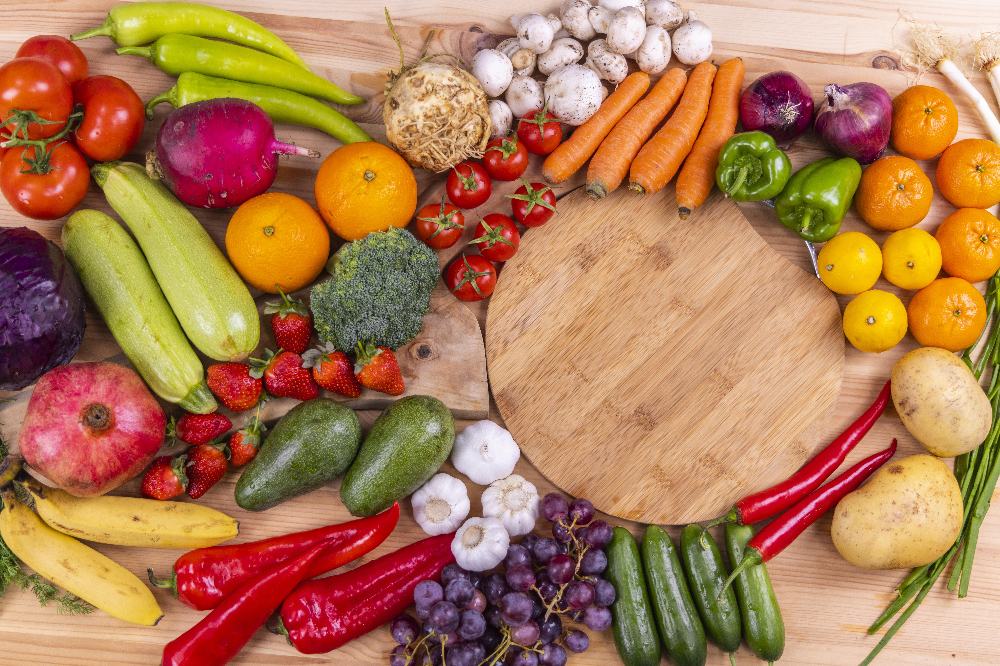

Inicio
¿Quiénes somos?
Temas
Alimentación saludable (INCMNSZ)
Guías alimentarias
Hidratación y la Jarra del Buen Beber
Herramientas de salud (IMSS)
Sostenibilidad alimentaria
Recomendaciones de ejercicio
Videos de recetas
Marco normativo
¿Sabías qué?
Videos
Recursos
Tu opinión

¿SABÍAS QUÉ?
Selecciona un Tema de Interés:
🌟 Todos los Datos Curiosos
🧠 Cuerpo Humano y Digestión
🍎 Nutrición y Alimentos
🏋️ Ejercicio y Deporte
💧 Hidratación y Jarra del Buen Beber
🌙 Hábitos y Estilo de Vida